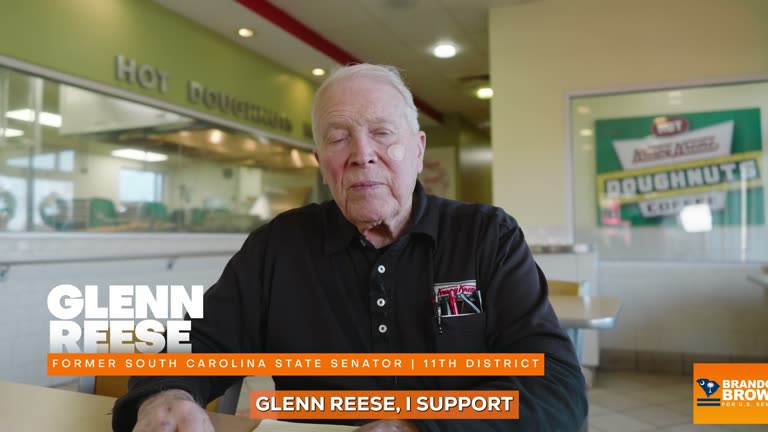

Recruitment videosthat help you hire and enroll.
People choose a job or a school after they see the people already there. We film your team, your students and your workplace and turn them into recruitment videos that help candidates decide to apply.
What we make
Employer brand films, day-in-the-life videos, employee and student testimonials, job-fair and recruiting-event loops, and short vertical clips for LinkedIn, Instagram and TikTok. Each project includes captioned cuts sized for every channel you recruit on.
Recent work
We have produced recruitment and enrollment films for charter schools, a graduation and recruitment film for the Music City Construction Careers union pre-apprenticeship program, and event films for Tennessee State University.
How we keep it real
Candidates respond to real people. We interview your people on camera, capture real work in progress, and let them speak in their own words, then edit for pace so the main message comes early.
Series and multi-location shoots
Recruiting several roles or locations at once? We plan a series that shares one look, film efficiently across sites, and deliver a set of videos you can use throughout the year. We travel nationwide.
Everythingyou need.
See itin motion.





Questions, answered.
How long should a recruitment video be?
A main employer brand video usually runs 60 to 120 seconds. Social clips work best at 15 to 45 seconds, and the strongest message should appear in the first few seconds.
Can you produce a series of recruitment videos?
Yes. We plan series for multiple roles, locations or recruiting drives with a shared look, and we schedule filming so the series shares shoot days where possible.
Do you film outside Nashville?
Yes. Leo Operations is based in Nashville and travels nationwide.
What do you need from us?
A contact person, a short list of roles and people to feature, access to the workplace, and approval of the plan. We handle scheduling, filming, editing and captions.
Ready towin?
Tell us what you’re running for, building or launching. We’ll tell you how we make people remember it.
Email Leo Operations →